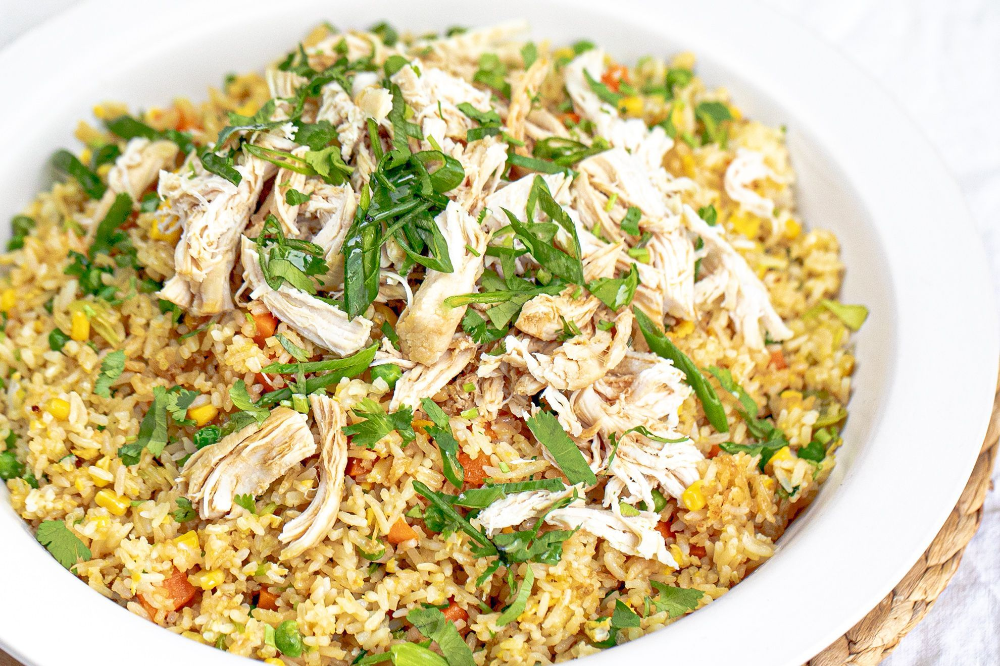

Fried Rice

Fried rice is a dish of cooked rice that has been stir-fried in a wok or a frying pan and is usually mixed with other ingredients such as eggs, vegetables, seafood, or meat. It is often eaten by itself or as an accompaniment to another dish.
ingredients
- 3 cups cooked rice
- salt as needed
- 1 tablespoon garlic shopped
- 1 tablespoon soya sauce
- 1/4 teaspoon crushed pepper
- 2 tablespoon oil
- 1 to 2 green chilies
- 2 springs scalliaons or spring onions or 1 small onion
- 1/4 to 1/2 cup bell peppers
- 150g chicken chopped to bite size
- 1 egg or 3/4 tbsp corn starch or brine
- 1/2 teaspoon soya sauce
- 1 large pinch salt
- 1 large pinch ccrushed pepper or powder
Instructions
- Wash rice at least twice and cook it.
- Dreain to a colander and cool it completely.
- Add chicken, a pinch of salt, pepper and 2 tablespoons of egg white to a bowl
- Pour 1 1/2 tablespoon oil to a hot pan.
- When the oil turns hot, put the chicken to the pan.Stir fry for 3 to 4 minutes untin the chicken is almost cooked through.
- Move the chicken aside in the pan.Then beat the remaining egg and pour it.Then remove the egg and chicken to plate.
- Pour another half tbsp oil to the same pan.
- Add garlic and fry for 3 seconds.
- Then add spring onion whites or scallions, chillies, bell pepper and toss on a highest heat just for 2 minutes.
- Put the rice, pepper powder and pour soya sauce along with any other sauce you desire.Then mix and fry on the highest flame for a minute.
- Then add chicken and egg.Continue to fry until the rice turns hot.This takes just a minute or two.
- Ckeck salt and add more if needed. Over frying will make the chickenfried rice hard.
- Serve chicken fried rice hot.